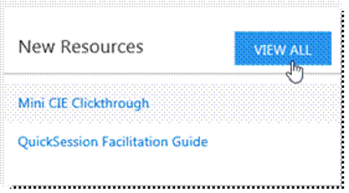
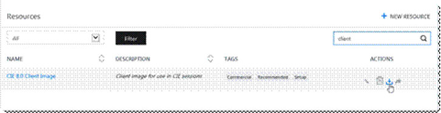
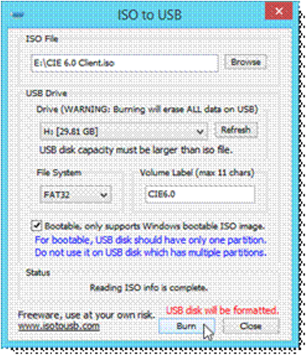
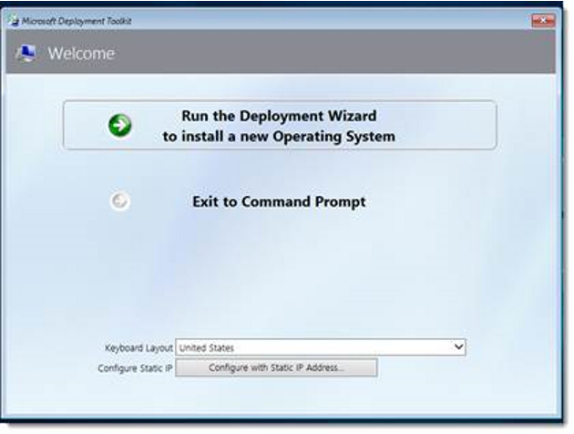
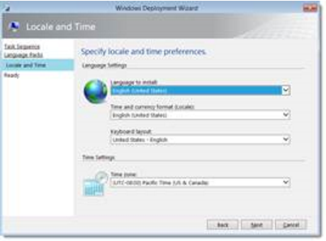
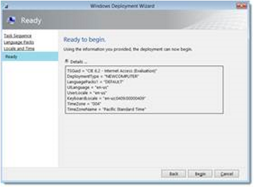
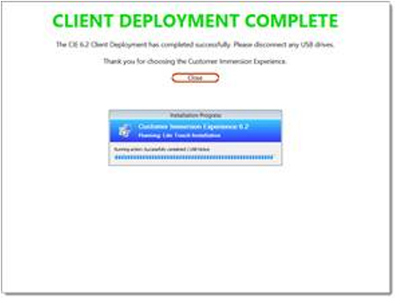

Contact Technical Support
As OEMs implement startup methods uniquely for each PC, we are unable to provide exact guidance on the boot key combination you will need to use, however the large majority of PCs will utilize the F12 key and provide an option to boot from the USB. If you are unable to continue because your PC does not have this option or you are unable to boot from USB, please contact CIE Support at support@microsoftcie.com for help with your specific instance.
When imaging clients, you may use a USB 3.0 high-speed thumb drive (or some sort of USB-connected external hard drive) to deploy the image to the PC devices.
To begin USB client imaging, you will first need to download the Client ISO. This is an ISO file that can be used to create the USB thumb drive that will deploy your client image onto the PC(s) in preparation for a CIE session.
Downloading the Image
The Client ISO file needed for use with KIE is available for download for both Microsoft internal employees and approved KIE partners. This is an ISO file that is applied to USB thumb drive(s) that will be used to image the PC(s) in preparation for a KIE session.
To begin, navigate to www.microsoftcie.com and log in using your Partner or Microsoft Employee credentials.
Once authenticated, click on My Dashboard.

Then, click on View All on the Resource tile.

Type Client in the search bar and click the download icon to begin downloading the ISO image that will be used to create your USB thumb drive.

To aid in the creation of the thumb drive, download ISO to USB from http://isotousb.com/isotousb_setup.exe.
Run the setup program to install the application. Once installed, launch the program.

Click the Browse button to navigate and select the ISO file you downloaded from the CIE website. Pull down the menu to select the thumb drive you wish to use (you may need to use the Refresh button if you recently plugged in your USB drive), the Bootable check box with FAT32 for the Files System and a descriptive Volume Label. This process will erase ALL content on the drive you use.
Key Step
This drive will be used to erase and image clients in place of an Imaging Server. This should not be confused with a Windows To Go drive.
Click Burn and the application will create a removable media USB drive with the CIE client image.
The thumb drive creation process may be performed on as many thumb drives as you wish to use. You can create a thumb drive for each PC in your CIE kit, or use one thumb drive to image each machine in series.
Deploying the CIE Client Image
Once the process is complete, plug the newly created USB Thumb Drive into an available USB port on your client device, boot the device and press F12 to enter the boot options menu (or whatever the given key may be for your PC device). Select the option to boot from the USB drive. This will execute the Windows Deployment wizard that will deploy the client image onto your client device.
The Windows Deployment Wizard will appear and you will select Run the Deployment Wizard.

Localization settings should be selected in this screen of the wizard. Select the keyboard and time zone settings that are applicable to your region and then select Next.

Select Begin to start the CIE client operating system deployment process.

About 15-20 minutes into the Task Sequence, the PC will reboot out of the Window PE (Pre-installation Environment) and into Windows 10 for the first time. The process will continue, finally showing the screen below.
Due to the deployment limitations, you will need to remove the USB drive before acknowledging completion.

Once the client has completed the image deployment process, you will need to continue to Client Setup.